Ceci Computers
Paso 1: Montaje de la placa base
Coloca la placa base dentro de la caja y usa los espaciadores para separarla del chasis. Alinea los puertos traseros con los agujeros de la caja y asegúrate de que todo quede bien colocado. Luego, fija la placa a la caja con los tornillos, pero sin apretarlos demasiado para evitar dañar la placa.
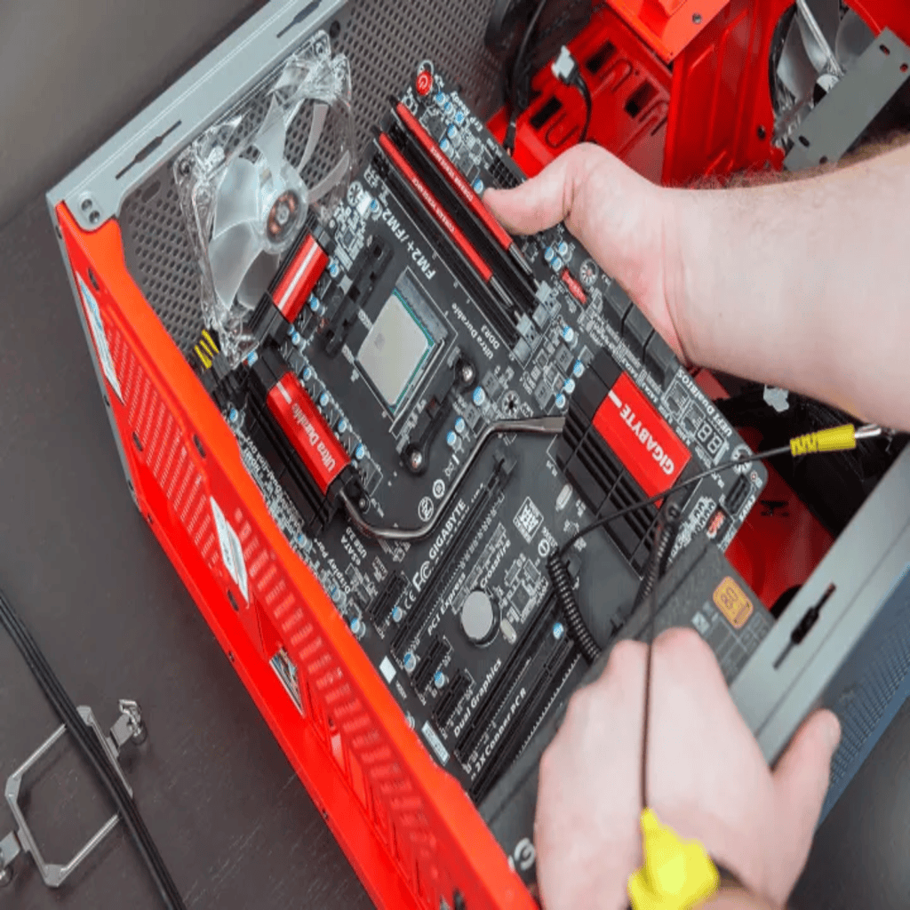Paso 2: Instalación del procesador (CPU)
Abre el zócalo de la CPU en la placa base, levanta la palanca. Mete el procesador en la ranura asegurándote de que la muesca de la CPU coincida con la del zócalo. Baja la palanca para fijarlo. Ya está, procesador colocado.
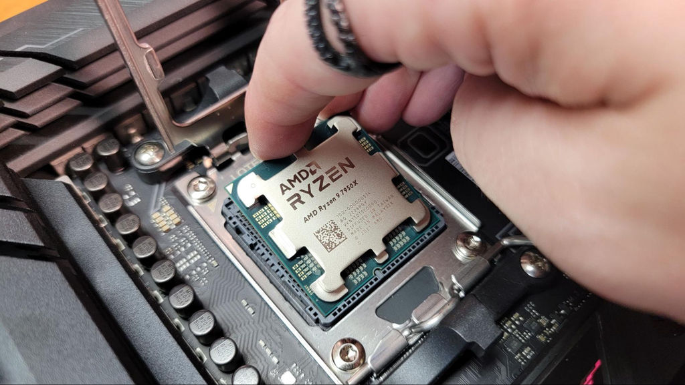Paso 3: Instalación de la refrigeración líquida
Ahora toca la refrigeración líquida. Coloca el bloque de la bomba sobre la CPU. Si ya tiene pasta térmica, perfecto. Si no, pon una pequeña capa sobre la CPU antes de poner el bloque. Fija el bloque con los tornillos que vienen. El radiador va en la parte frontal de la caja. Mete los ventiladores en la dirección correcta (de dentro hacia fuera) y fíjalos bien. Después, conecta los cables de los ventiladores y la bomba a los puertos correspondientes de la placa o al controlador.
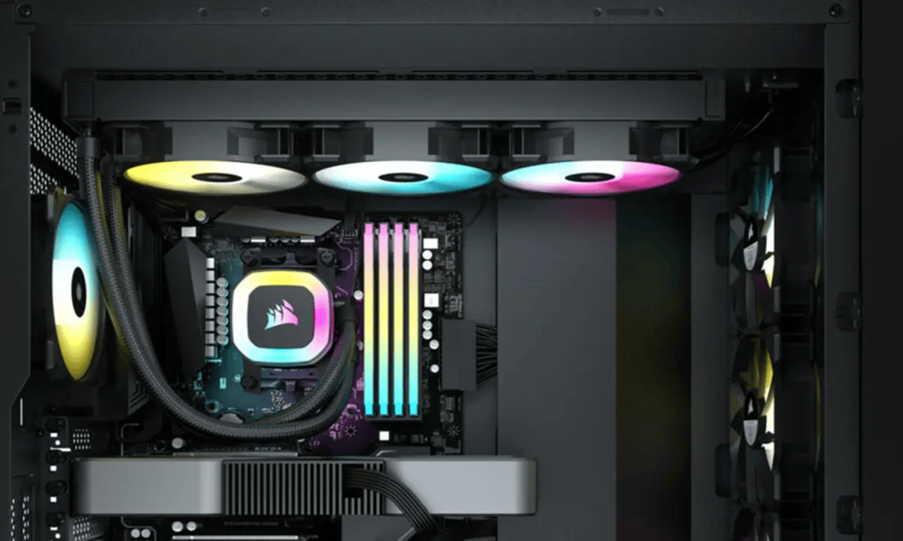Paso 4: Instalación de la memoria RAM
Abre las ranuras de la RAM en la placa base. Toma los módulos de memoria y, alineándolos bien, presiónalos hasta que encajen. Asegúrate de que ambos módulos estén bien colocados.
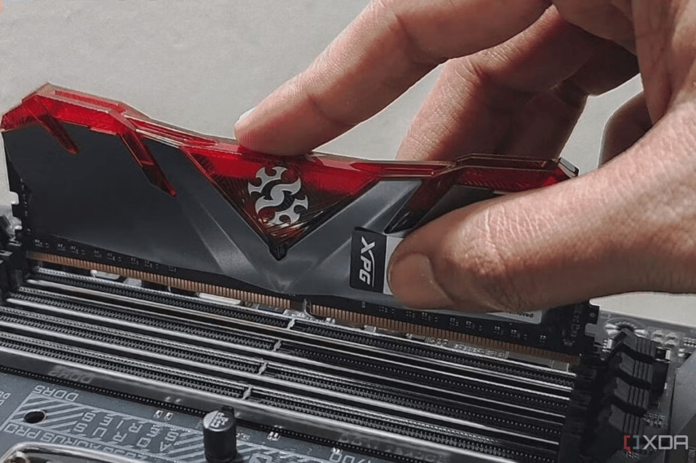Paso 5: Instalación de la tarjeta gráfica
Coloca la tarjeta gráfica en la ranura PCIe más cercana al procesador. Empújala hasta que encaje. Luego, atorníllala a la caja para que no se mueva. Conecta los cables de alimentación de la fuente de poder a la gráfica (son cables PCIe, 6+2 pines).
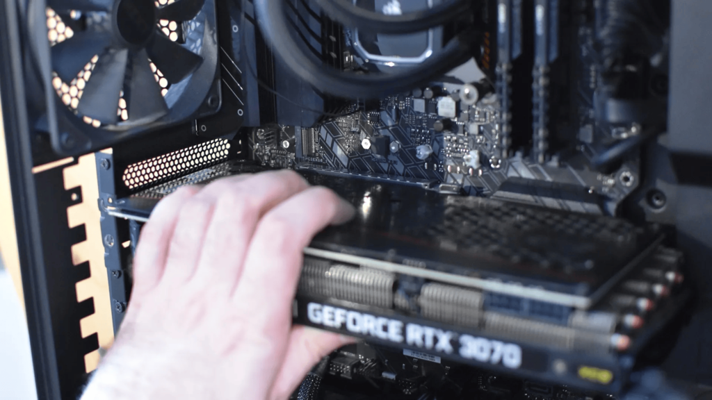Paso 6: Instalación de almacenamiento
El SSD de 1TB que va en la ranura M.2 lo pones en la ranura correspondiente de la placa base. Alinea y presiona hacia abajo, luego atorníllalo para que no se mueva. El segundo SSD va conectado con un cable SATA. Inserta el cable en la unidad y en la placa base, y asegúralo en la caja con los tornillos.
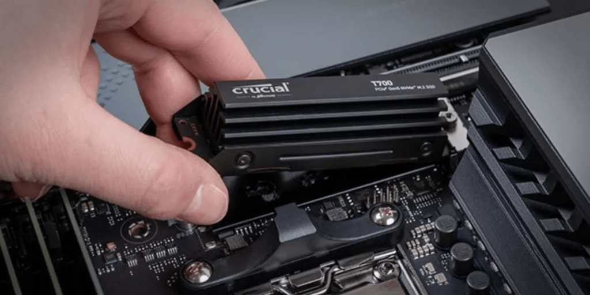Paso 7: Conectar los cables del panel frontal y puertos externos
Ahora es momento de conectar los cables del panel frontal, como el botón de encendido, los puertos USB y el audio. Consulta el manual de la placa base para asegurarte de que cada cable esté en su lugar correcto. Luego, conecta los cables de la fuente de alimentación a la placa base, a la gráfica y a los discos duros.
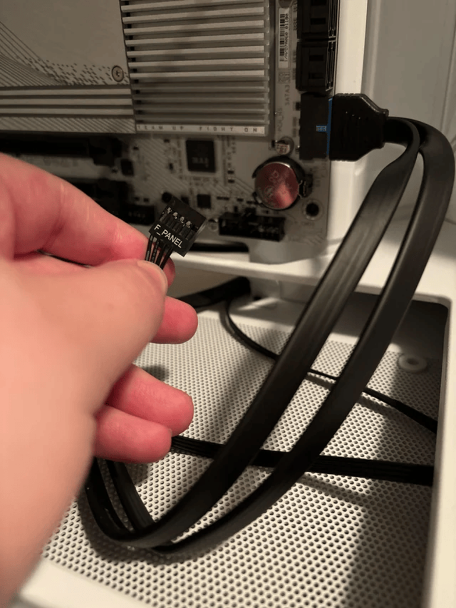Paso 8: Instalación de los ventiladores de la caja
Coloca los ventiladores de la caja donde necesites. Los más comunes suelen ir en la parte delantera o trasera. Asegúrate de que el flujo de aire sea el adecuado: los ventiladores de la parte delantera deben meter aire y los traseros sacarlo. Fíjalos a la caja y conéctalos a la placa o al controlador de ventiladores.
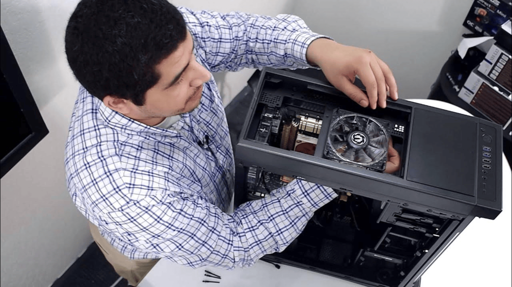Paso 9: Instalación de la fuente de alimentación (PSU)
Ahora toca instalar la fuente de alimentación. Colócala en el hueco que corresponde en la parte inferior o superior de la caja (según diseño de la caja). Atornílla la PSU a la caja para que no se mueva. Conecta el cable de 24 pines a la placa base y el cable de 8 pines cerca del procesador. Además, conecta los cables PCIe a la tarjeta gráfica y los cables SATA a los discos duros. No olvides verificar que los cables están bien conectados antes de continuar.
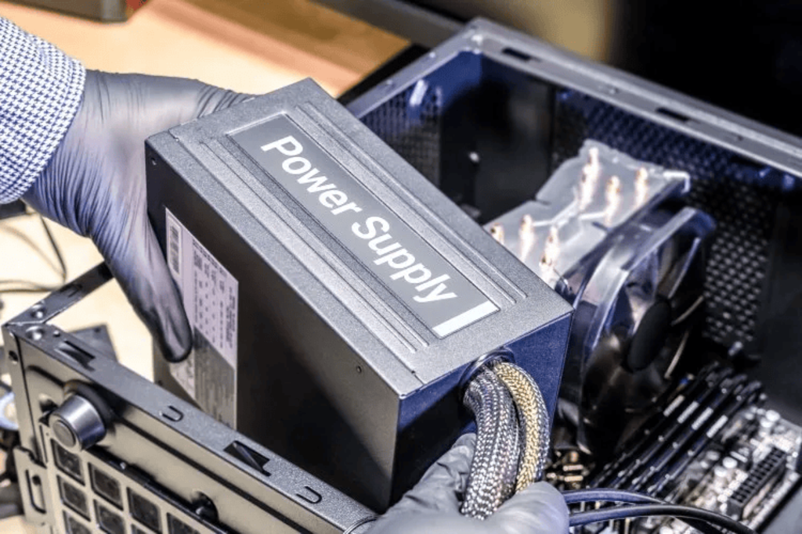Paso 10: Revisión y encendido del sistema
Haz una última revisión. Asegúrate de que todos los cables estén bien conectados y que no falte nada. Luego conecta el monitor, el teclado y el ratón, y enciende el PC. Si todo va bien, debería arrancar sin problemas.
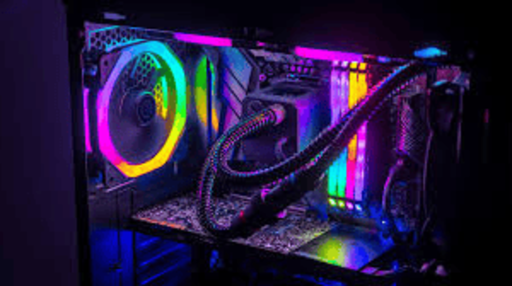Paso 11: Configuración del sistema operativo
Ahora toca instalar el sistema operativo. Conecta un USB con el instalador de Windows o Linux y sigue las instrucciones en pantalla. Una vez que esté instalado, asegúrate de poner los controladores de la placa base, la gráfica y demás.
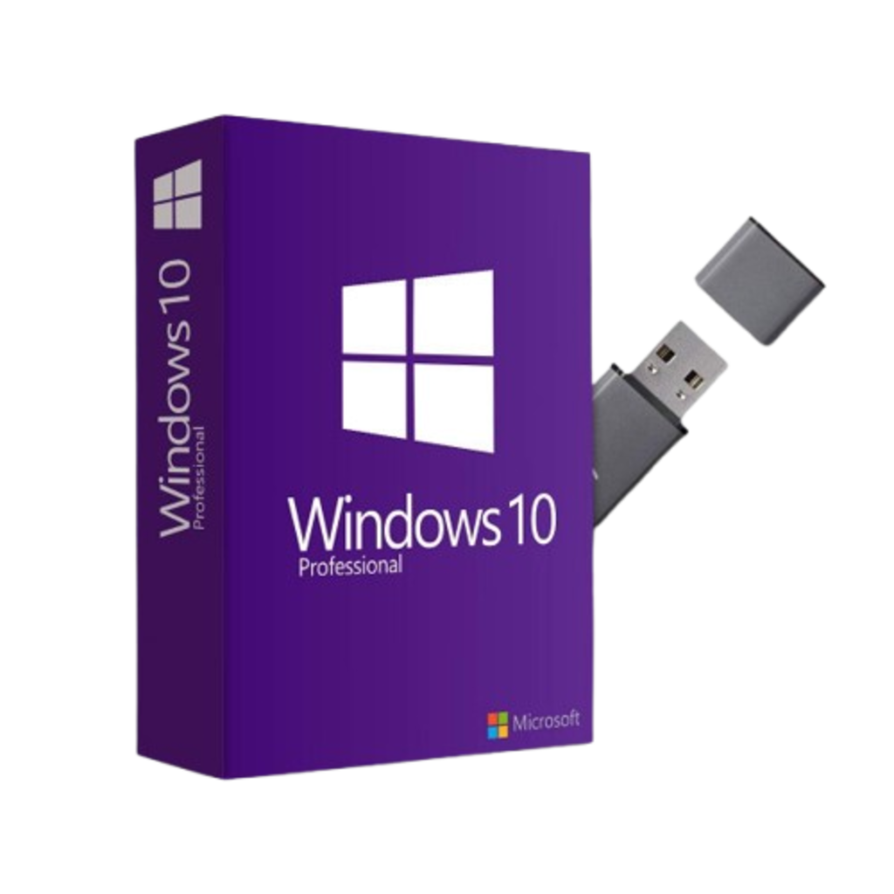